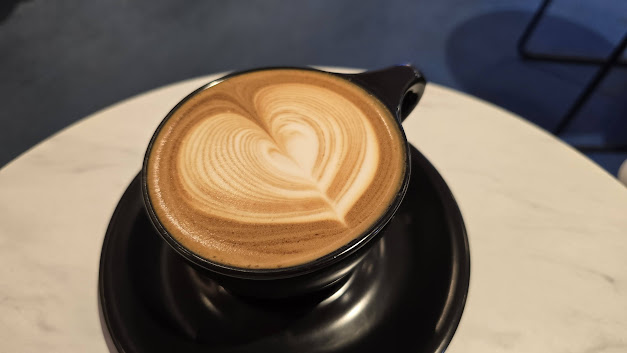
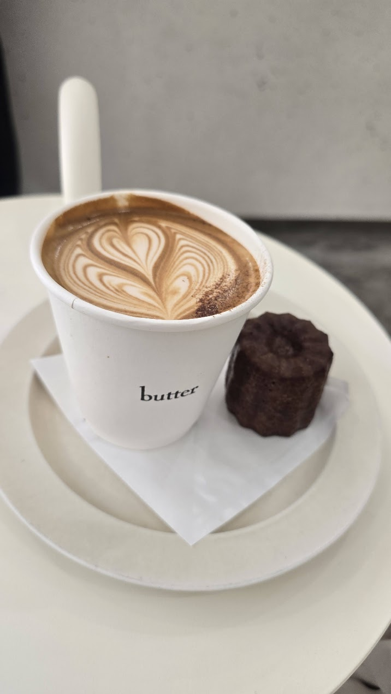
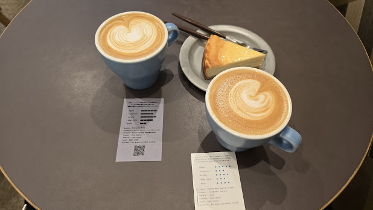
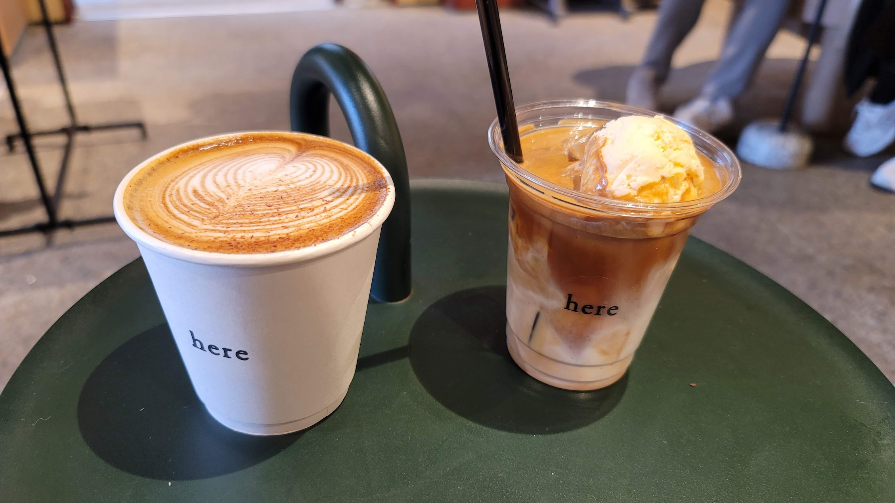

...
    <div class="info-sections-row">
        <section class="about-me">
            <h2>About Me</h2>
            <div class="about-item">
                
                <div class="about-text">
                    <div class="about-title">Amateur Race Car Driver</div>
                    <div class="about-desc">Find me at the tracks around SoCal competing in the 86 Cup or HPDE lapping days.</div>
                </div>
            </div>
            <div class="about-item">
                
                <div class="about-text">
                    <div class="about-title">Former Competitive Smash Bros. Player</div>
                    <div class="about-desc">Power ranked in SoCal and other regions—my love of competitive gaming knows no bounds.</div>
                </div>
            </div>
            <div class="about-item">
                
                <div class="about-text">
                    <div class="about-title">Japan Traveler</div>
                    <div class="about-desc">My partner is Japanese and I am studying the language! I hope to continue utilizing my affinity for Japanese culture.</div>
                </div>
            </div>
            <div>
                <div class="coffee-grid">
                    
                    
                    
                    
                </div>
                <div class="coffee-blurb">
                    Avid coffee consumer and espresso enjoyer. Amateur brewer and enjoy coffee in all forms!
                </div>
            </div>
        </section>

        <section class="resume">
            <h2>Resume</h2>
            <div class="resume-section">
                <h3>Jonathan Geisinger</h3>
                <p><strong>Associate Producer | Creative Project Manager</strong></p>
                <p>Los Angeles, CA | jonathan.geisinger@gmail.com | 347-804-1133 | 
                    <a href="https://www.linkedin.com/in/jonathan-geisinger-venti/" target="_blank" rel="noopener">LinkedIn Profile</a>
                </p>
                <p>
                    Associate Producer with experience in game production, esports tournament operations, and localized marketing content. Adept at coordinating cross-functional teams for global game publishing and creative projects.
                </p>
            </div>
            <div class="resume-section">
                <h3>Summary of Qualifications</h3>
                <ul>
                    <li><strong>Game Production Expertise:</strong> Led capture teams and provided full producer support for Tencent AAA mobile and PC titles including PUBG: MOBILE, Honor of Kings, and Path of Exile 2.</li>
                    <li><strong>Cross-Functional Collaboration:</strong> Managed internal and external stakeholders, including localization teams, editors, and brand managers to deliver polished video content.</li>
                    <li><strong>Marketing & Content Strategy:</strong> Developed localized content for the North American market and supported social media initiatives across various platforms.</li>
                    <li><strong>Esports & Tournament Operations:</strong> Coordinated remote and live tournaments for major esports titles such as Call of Duty, Overwatch, and Halo MCC.</li>
                </ul>
            </div>
            <div class="resume-section">
                <h3>Experience</h3>
                <p><strong>ZAM (Tencent)</strong> – Playa Vista, CA <em>October 2021 – June 2025</em></p>
                <p><strong>Associate Producer / Lead Game Capture</strong> <em>(Oct 2022 – June 2025)</em></p>
                <ul>
                    <li>Supported campaign development for top titles: Path of Exile 2, PUBG: MOBILE, and GODDESS OF VICTORY: NIKKE.</li>
                    <li>Led capture team to create culturally relevant content tailored to North American audiences.</li>
                    <li>Managed a team of gameplay capture specialists and editors to deliver assets for partner studios.</li>
                    <li>Oversaw support for global franchises such as League of Legends (LPL), Honor of Kings, and NBA Infinite.</li>
                </ul>
                <p><strong>Production Assistant</strong> <em>(Oct 2021 – Oct 2022)</em></p>
                <ul>
                    <li>Provided production support and client communication across NA/EU/China time zones; primary liaison for editors and stakeholders.</li>
                </ul>
                <h4>Some super cool projects I’ve worked on:</h4>
                <p><strong>NIKKE</strong></p>
                <ul>
                    <li>Technical Director for all major live streams to date (anniversaries, holidays); managed remote OBS streams via Restream.io across YouTube and Twitter.</li>
                    <li>Coordinated technical rehearsals, live execution, post-mortems, and viewership analytics.</li>
                </ul>
                <p><strong>PUBG MOBILE</strong></p>
                <ul>
                    <li>Led video creative direction for four years; conceptualized and produced social content, memes, giveaways, monetization promos, and brand collaborations. (TikTok, YouTube, X, Instagram)</li>
                    <li>Managed creative for co-branded content (e.g., Dodge, Butterfinger, Dragon Ball Super) adhering to Krafton and sponsor guidelines.</li>
                    <li>Supported influencer live streams, esports-style broadcasts, roadshows, and VIP event filming.</li>
                </ul>
                <p><strong>Path of Exile 2 (PoE2)</strong></p>
                <ul>
                    <li>Produced gameplay and live camera content from console playtests; led social content for Western EU community channels.</li>
                    <li>Localized content into French and German; collaborated with contractors on guide content.</li>
                    <li>Organized playtests and supported capture accounts for media creation.</li>
                </ul>
                <p><strong>LPL (League of Legends Pro League - NA Content)</strong></p>
                <ul>
                    <li>Produced and edited daily highlight videos for LPL English Twitter; launched and grew LPL TikTok and YouTube Shorts presence.</li>
                    <li>Produced translations of mic checks and interviews; created NA-specific replays using dev tools.</li>
                </ul>
                <hr>
                <p><strong>Community Gaming</strong> – Remote <em>February 2021 – October 2021</em></p>
                <ul>
                    <li>Served as remote tournament admin for Call of Duty and Overwatch competitions.</li>
                    <li>Ensured seamless tournament operations and rule enforcement in virtual environments.</li>
                    <li>Supported event continuity and player engagement during pandemic restrictions.</li>
                </ul>
                <p><strong>DreamHack AB</strong> – Anaheim, CA <em>February 2020</em></p>
                <ul>
                    <li>Oversaw bracket management and player coordination for live esports tournaments.</li>
                    <li>Delivered high-quality player experience through real-time decision-making and escalation handling.</li>
                </ul>
                <p><strong>Stony Brook Smash Bros.</strong> – Stony Brook, NY <em>May 2014 – January 2018</em></p>
                <ul>
                    <li>Built and led collegiate Smash Bros. team to a Collegiate Starleague championship in 2016.</li>
                    <li>Organized and executed campus-wide esports events and community tournaments.</li>
                    <li>Competed for over a decade with notable wins (e.g., C9 Mango, multiple Top 100 players); featured at Genesis official livestream.</li>
                </ul>
            </div>
            <div class="resume-section">
                <h3>Education & Certifications</h3>
                <ul>
                    <li>UC Irvine – Certificate Course, Esports Project Management</li>
                    <li>Stony Brook University – Information Systems, Writing, Japanese Studies</li>
                    <li>Professional Scrum Master I (PSM1) – Scrum.org</li>
                </ul>
            </div>
        </section>
    </div>
...
